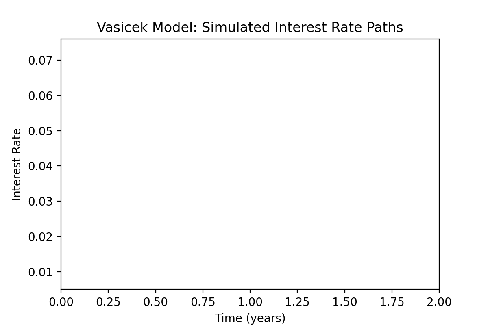

Overview
This project investigates the Vasicek and Cox-Ingersoll-Ross (CIR) models for simulating and understanding interest rate dynamics in financial markets.
Mathematical Explanation: Vasicek & CIR Models
Vasicek Model: The Vasicek model describes the evolution of interest rates as a mean-reverting process:
\[
dr_t = \kappa (\theta - r_t) dt + \sigma dW_t
\]
where:
- \( r_t \): short-term interest rate at time \( t \)
- \( \kappa \): speed of mean reversion
- \( \theta \): long-term mean rate
- \( \sigma \): volatility
- \( dW_t \): Wiener process (random shock)
Cox-Ingersoll-Ross (CIR) Model: Similar to Vasicek, but ensures rates stay positive:
\[
dr_t = \kappa (\theta - r_t) dt + \sigma \sqrt{r_t} dW_t
\]

Sample Python Code: Simulating Vasicek Interest Rate Paths
import numpy as np
import matplotlib.pyplot as plt
# Parameters
r0 = 0.03 # initial rate
kappa = 0.15 # mean reversion speed
theta = 0.05 # long-term mean
sigma = 0.01 # volatility
T = 2.0 # years
N = 100 # time steps
M = 10 # number of paths
dt = T / N
rates = np.zeros((M, N+1))
rates[:, 0] = r0
np.random.seed(42)
for m in range(M):
for t in range(1, N+1):
dr = kappa * (theta - rates[m, t-1]) * dt + sigma * np.sqrt(dt) * np.random.randn()
rates[m, t] = rates[m, t-1] + dr
times = np.linspace(0, T, N+1)
for m in range(M):
plt.plot(times, rates[m])
plt.xlabel('Time (years)')
plt.ylabel('Interest Rate')
plt.title('Vasicek Model: Simulated Interest Rate Paths')
plt.show()
How to Run
# Save as vasicek_sim.py
pip install numpy matplotlib
python vasicek_sim.py
Sample Output
Simulated 10 Vasicek interest rate paths over 2.0 years.
The GIF above shows the evolution of 10 simulated interest rate paths using the Vasicek model.